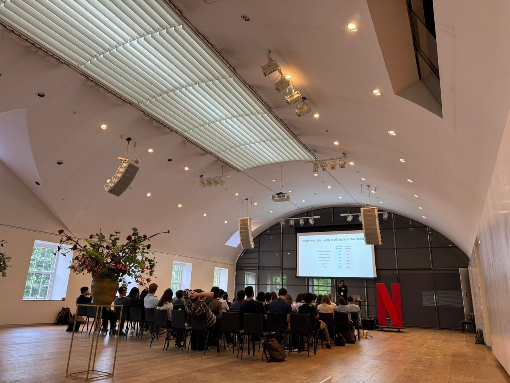
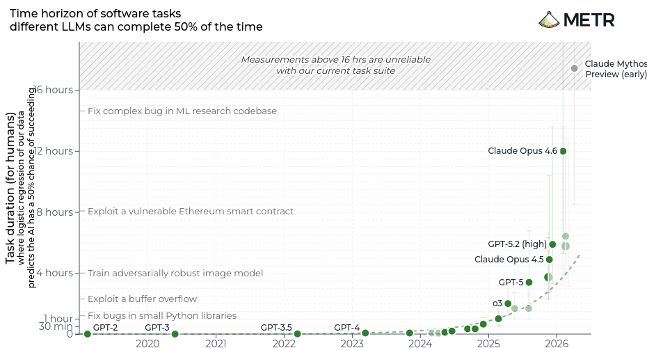
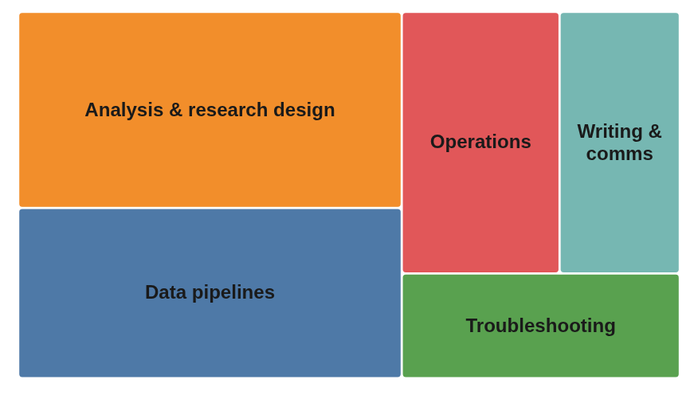
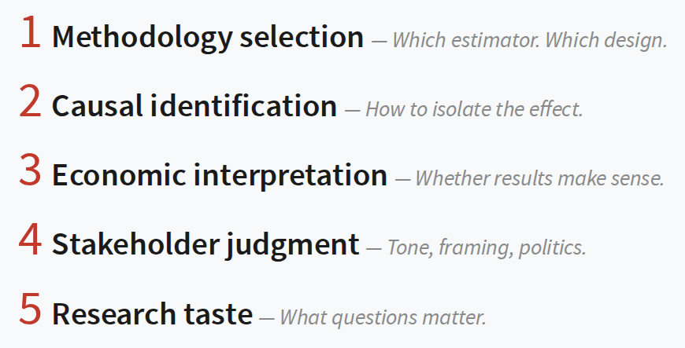
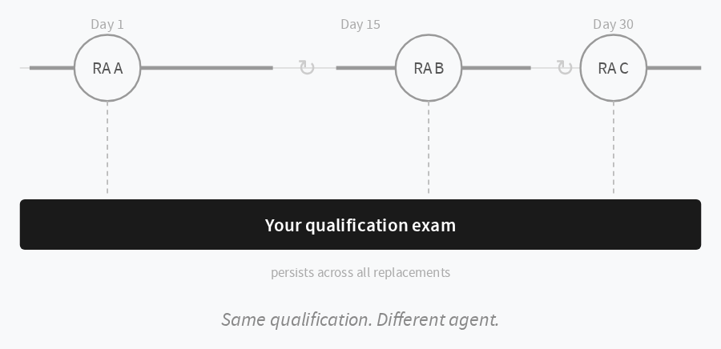
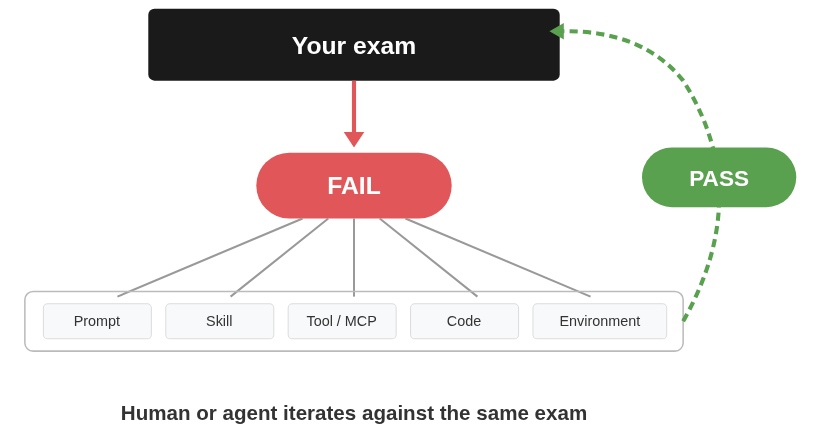

Given at NABE TEC EU 2026 (National Association for Business Economics, Technology Economics Conference), Amsterdam.

A short recap is on LinkedIn.
Abstract
How a cross-functional economics team at Amazon uses AI coding agents operationally - across analysis, data pipelines, operations, writing, and troubleshooting. The talk covers what economists delegate (implementation, iteration, exploration) and what they never delegate (methodology selection, causal identification, economic interpretation, stakeholder judgment, research taste). It introduces exam-first iteration as a feedback loop for maintaining control as delegation scales: encode intent, let the agent iterate against it, and use failure as an informative signal.
Slides and Transcript
- AI Coding Agents in an Economics Team
- Download PDF
- Transcript (WebVTT), an edited transcript of the recording
The Talk in Article Form
If you’d rather read than click through slides, here’s the talk as an article.
The team
I’m the engineering lead of a cross-functional team called Economic Decision Science at Amazon, based in London. Our target is optimizing how the European stores operate, in any form or shape we can, including convincing others to act on our decisions and our economic models.
The team is quite new. At first it was just economists, and we started seeing bottlenecks in data and scaling. When we engineers came in, one of the goals I set was that the scalable workforce here is not engineering. If we hire 40 more economists, we shouldn’t be blocked, and we shouldn’t have to scale engineers at the same ratio. So: can economists deliver without engineering bottlenecks of all shapes and forms?
That led us to focus on minimal infrastructure and fast iteration. It also led to something that’s hard to convince people of: more often than not, there’s no trade-off between exploration and production. You can iterate as fast as you normally would, without a stage where you hand things off to people who scale it in six months. If things are set up in the right way, it goes straight to production.
We call that setup the factory of economics: the capabilities you should have, built as blocks you can mix and match, with good UX, so you can tackle ambiguous problems across domains and move faster than the parts of the company that can afford multi-year efforts.
Coding agents arrived

We had all of this before AI. The capabilities we’d built are what many of you will recognize as agent skills, so the ways of working we had converged really well with the ways of working AI has.
We adopted coding agents as soon as they were available to us, around the middle of last year. I did the advocacy, never mandating, just getting people to see what they could do. When the Opus family of models came in, with Opus 4.6, there was a difference in quality: less babysitting, better tool calling, better at long tasks and combining things, and sometimes able to one-shot things.
These agents also work where the economists work. We have remote computers, and the command line was already what we were training people on.
What economists use them for

Roughly, the work falls into these buckets, across the team as a whole:
- Analysis and research design, the core economic work, where you’re rubber ducking a lot.
- Data pipelines. Our economists are builders, so a lot of it is data manipulation.
- Operations, which ideally shouldn’t be there, since we try to be zero ops. But we deliver for production, and sometimes things need to be done to keep live systems running.
- Writing and comms, the one that might seem obvious.
- Troubleshooting: libraries are broken, things aren’t working, and the agent helps you there.
Three examples
These are anonymized, so they might seem generic, but they’re real and very representative.
“Explain this model to me.” You have some applied science; let’s simplify and say it’s SQL. It doesn’t matter how long it is: the agent explains it to you step by step. You use your judgment and spot something wrong, like counting the wrong window, and you conversationally get it to correct it. If you’re set up in the right way, that can be in production immediately. It seems simple, but it’s very powerful, and you see a lot of it.
“Help me analyze this policy.” You’re starting to explore a problem and you have a lot of instincts, so you rubber duck with the agent to externalize your own thoughts. What about this methodology? These dimensions? Power analysis, clustering? What are my assumptions? You’re not just chatting and getting insights: as you go along, you’re proving and validating them. In this real case, it took fifteen different methodologies, or variations of one, to get to something we really trusted and could move forward with.
“Help me respond to this challenge.” It doesn’t really matter if your science is right if it doesn’t have an effect on the business. You may relate to being in meetings where your methodology gets challenged by non-economists. Challenging it is cheap, and in the past it might have been very hard to come back with the right data and win that battle. Now, two minutes after the meeting, you open your laptop, pull the data, produce a chart, and draft an appropriate response.
We also use AI and ML in more traditional ways, where we model behavior. But coding agents live where you live and have the broadest space to work in, which lets you delegate everything you want to, if you feel safe enough.
What economists never delegate

Experts don’t delegate which methodology to select. It’s very common for eager, helpful engineers from non-embedded teams to come in with an AI tool where you define a problem and it picks a methodology and does it all for you. Immediately the comments are: why this methodology? It’s wrong.
They don’t delegate causal identification or economic interpretation either. You may use code to help you evaluate things, but at the end you apply your own judgment. The same goes for institutional knowledge and stakeholder management: you know how the company works. And, because I love a catch-all variable, taste: knowing what questions matter and what you want to learn.
Where it hurts
The pain points come down to a handful of questions:
- Trust: how do we know it’s right? It’s 90% right, or 99% right. What happens if it’s wrong? Will I have to refund all my customers?
- Reliability: it worked yesterday, not today.
- Blast radius: what happens if it goes rogue?
- Observability: can’t explain what happened.
- Tool churn: so many things are coming in that it’s very hard, for you and for others, to decide what to adopt.
- Cost: not every company cares about it the same way, but eventually you will care about your spend, and you need a way to tackle it.
- Speed: too slow to explore effectively.
They all come down to control. If someone asks you whether their thing is good enough and you say you don’t know, you haven’t controlled it. You want to manage risk by working out which dimensions of control are important to you.
The research assistant analogy

Analogies have limitations, so don’t stretch this one too much, but think of hiring a coding agent as if it were a human. We work on a problem together: an economic model with a financial number, like a 100k budget, an ask, and a scope, maybe Europe. We pair program and you hold its hand a bit. And since you already know a few good practices, you separate things: a deterministic layer, like a Python script, and a data gathering and transformation layer.
Along the way you encode what the work should look like, and by the end you’ve encoded a qualification exam. That means you can replace the agent, or any part of it, and your user story persists. Same qualification, different agent.
What an exam looks like
It doesn’t have to look like this, but here’s one in YAML, which is human-readable, computer-readable and very easy to generate:
name: econ-model-runner
questions:
- name: runs-scenario
input: Run scenario for client ABC, target €100k. Scope: EU5
intention: Agent picks the right skill and executes with correct params
assert:
- type: tool-called
value: run-model --client ABC --ask 100000 --scope EU5
- name: plans-batch-safely
input: Run all clients under €300k, all markets, 20% above last cycle
intention: Agent should plan before executing a large ambiguous batch
assert:
- type: plan-contains
judge:
- clarifies 'last cycle' time range
- identifies source table
- smoke tests one case before full run
- estimates total effortWith non-deterministic steps, errors compound and you lose control. If you bound the non-deterministic parts, you cut off that propagation. The first question does it at the library level: I make my things very easy for the LLM to call, and check that a natural-language request maps to the right code. Once you get there, you’re very safe in at least one aspect. It looks like an integration test, or an eval.
The second question uses an LLM as a judge, where another model decides whether the answer is right. You should almost resist the urge to go there, because of cost and other considerations, but it can work for testing reasoning. Here it checks that, for a more complex ask, the agent plans and fails fast instead of going down tangents of work that have no value.
The feedback loop

Once you’ve codified the examples, when things fail, you or the agent can change the prompt, the tools or other things until you get to the business use case you want. This is what lets things self-validate, even self-mutate, and you control to which degree. A lot of it is instinct and practice: knowing how much leverage you want to give it.
Solving the right problem is usually about fast iteration. Look up Paul MacCready’s story: he did things way faster than others.
Operational realities
It’s not all beautiful.
- Slow tools kill fast iteration. If your tools don’t allow fast iteration even without AI, you won’t see the benefits, and you’ll say it doesn’t work.
- Context management is still a challenge.
- None of this is security. Security means it must not happen, so you should have deterministic policies that prevent what shouldn’t happen.
- Be a good boss. A good boss can delegate, but owns the outcomes. If you really automate, you don’t have an employee you can fire.
Takeaways
- Sketch the workflow early. Think about the diagram, try the UX and see how it works. You can slowly fill the fake workflow with real things as you create the exam.
- Break long tasks into testable blocks, and let the agents help you there, coding prototypes that become the real thing.
- Use code for the stable steps, and let LLMs do reasoning and tool calling, but not more. Reduce the number of smart parts.
- Use exam-first iteration to keep control. It works for what you build on your own computer, and it can easily be handed to engineers and other teams. My hope is that it becomes an easy communication bridge between business, software and economics.